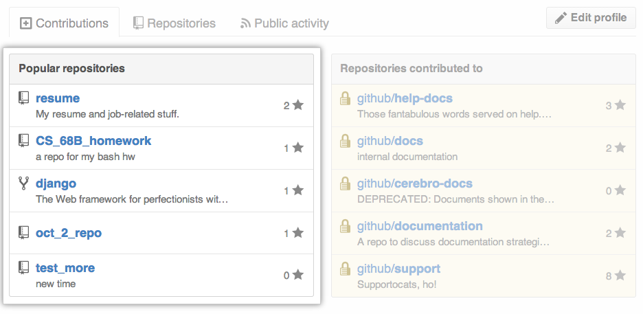
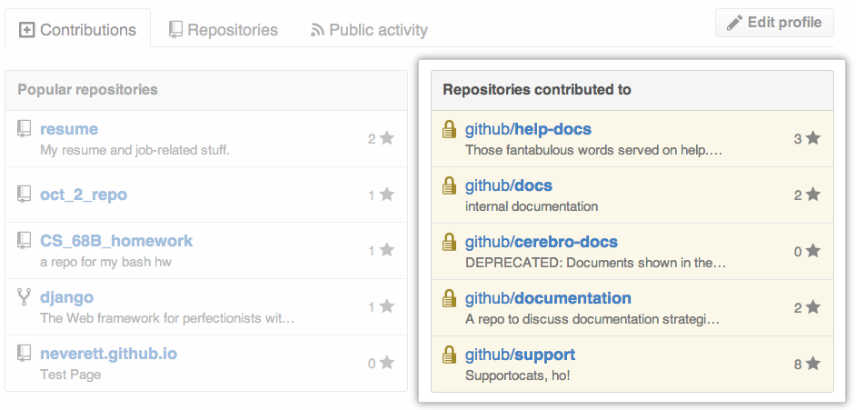
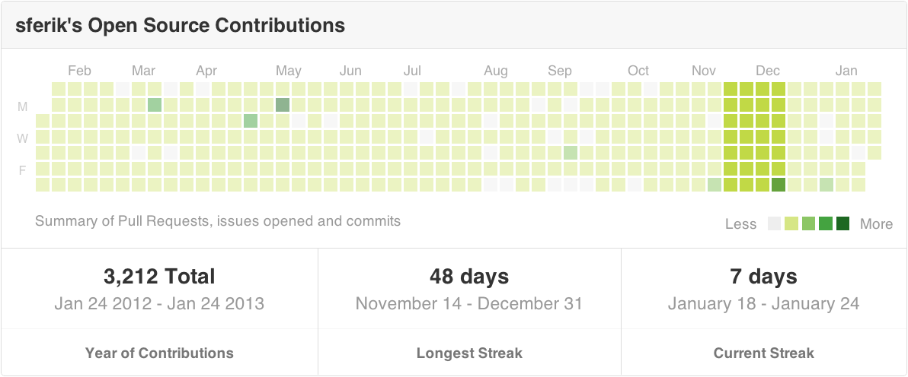
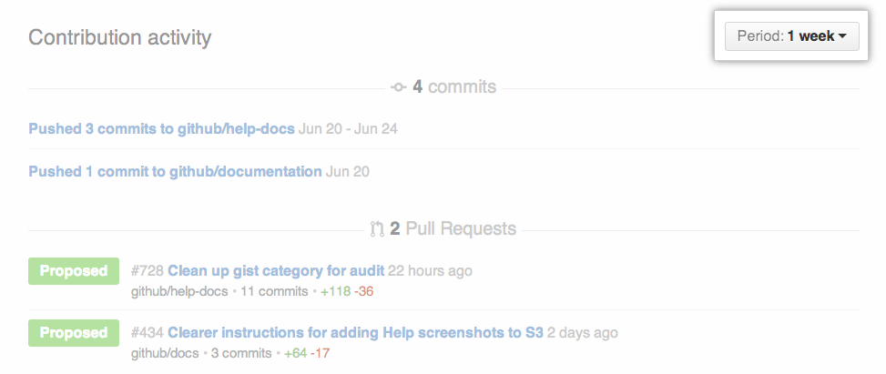

Your GitHub profile shows the world your most popular repositories and repositories you've worked on recently, as well as a graph of your repository contributions over the past year.
Note: Commits will only appear on your contributions graph if you have added the email address you used for your local Git configuration to your GitHub email settings. For more information, see "Why are my contributions not showing up on my profile?".
What counts as a contribution
On your profile page, certain actions count as contributions:
- Committing to a repository's default branch or
gh-pagesbranch. - Opening an issue.
- Proposing a pull request.
Contributions only count if they were made within the past year.
Popular repositories
This section displays your repositories with the most watchers.

Repositories contributed to
This section displays repositories you've contributed to ranked by the type, number, and time of contribution.

Contributions calendar
Your contributions calendar shows your contribution activity over the past year.
Viewing contributions from specific times
- Click on a day's square to show the contributions made during that 24-hour period.
- Press Shift and click on another day's square to show contributions made during that timespan.
Note: You can select up to a one-month range on your contributions calendar. If you select a larger timespan, we will only display one month of contributions.

How contribution event times are calculated
Timestamps are calculated differently for commits and pull requests:
- Commits use the time zone information in the commit timestamp.
- Pull requests and issues opened on GitHub use your browser's time zone. Those opened via the API use the timestamp or time zone specified in the API call.
Contribution activity
The contribution activity section shows a timeline of your commits, proposed pull requests, and open issues. You can change its timespan by clicking the dropdown on the right side of the page.
